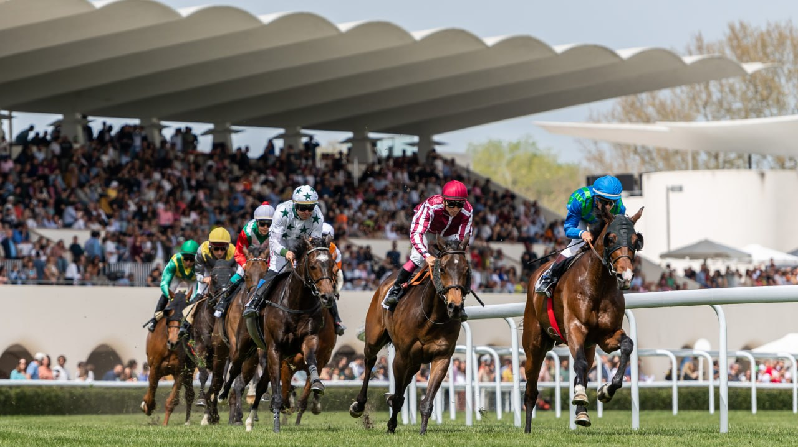

El Hipódromo de la Zarzuela programa doble jornada de carreras con la Poule de Potros
El recinto madrileño acogerá dos reuniones esta semana: el viernes 1 de mayo y el domingo 3, ambas con cinco pruebas desde las 12:00 horas. La Poule de Potros centrará el programa dominical.

El Hipódromo de la Zarzuela celebrará dos jornadas de carreras esta semana, en una programación especial que arranca el viernes 1 de mayo y se completa el domingo 3. Ambas reuniones ofrecerán cinco pruebas con inicio a las 12:00 horas, en una propuesta que busca dinamizar la actividad turfística en el recinto madrileño.
La cita dominical contará con la Poule de Potros como carrera destacada del programa. Esta prueba tradicionalmente reservada a ejemplares de tres años representa una de las referencias clásicas del calendario nacional y servirá como plato fuerte de una jornada que complementará la actividad iniciada el viernes. El formato de doble convocatoria semanal permite ampliar las oportunidades de competición tanto para los profesionales como para el público asistente, consolidando la presencia del hipódromo en el panorama del turf español.
— Redacción de Galope al Día